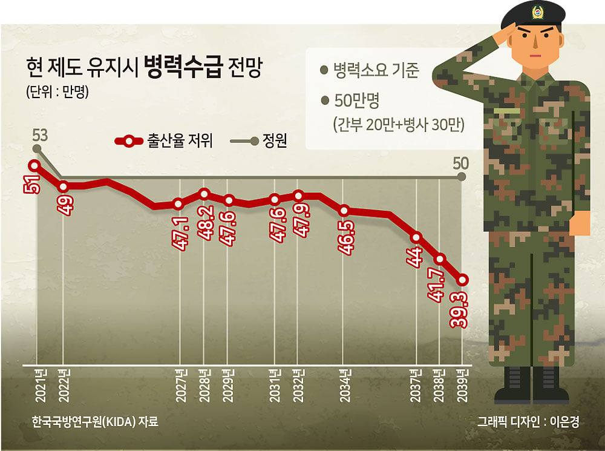
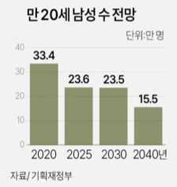

여성징병제 이야기가 활발히 논의되고 있는게 남녀평등문제도 있지만 무엇보다 가용인원이 줄고 있어서인데 이 상황에서
'훈련소라도 가야함'
'기초훈련이라도 받아야함'
은 적절치 않다 봄
훈련소를 갈 수 있는 상황이면 당연히 남녀 똑같이 보내야지.


여성징병제 이야기가 활발히 논의되고 있는게 남녀평등문제도 있지만 무엇보다 가용인원이 줄고 있어서인데 이 상황에서
'훈련소라도 가야함'
'기초훈련이라도 받아야함'
은 적절치 않다 봄
훈련소를 갈 수 있는 상황이면 당연히 남녀 똑같이 보내야지.
댓글
수집 당시 최근 댓글 10개
하위헌스 · 10 시간 전
BGM머신 · 9 시간 전
여자들 기훈단 입대 스타트 끊으면 다음단계 넘어가는건 쉬우니까 그러지 ㅋㅋㅋ 그리고 여군들 징병해서 자대 배치하는건 쉽지 않을듯 독립된 중대 대대에는 넣기도 애매하고 시설도 없고
꼬길밟 · 9 시간 전
여자는 공익으로 대체복무하면 나라에서 준비할 것도 없이 바로 해결되는거 아니냐 현역 입대 불가한 남자를 공익으로 배치할게 아니고
김덕순화덕파스타 · 8 시간 전
감당 못하는 사고 개많이 일어난다. 군대도 안간년들이 간호사 문화라고 태움하는거 봐라. 민간 직업에서도 저지랄한느데 군대간다? 니들 이거 되겠냐? 오또케 하다가 사고 존나 크게 일어나고 보적보라고 지들끼리 육체적 정신적 괴롭혀서 날이면 날마다 목메달고 뒤지는 년들 개많이 나와서 시체 수습 자체가 어려워질 수 잇음. 계집을 뭔 군대에 보내냐. 그냥 시발 와서 밥이나하다가 가라고 그래.
좋아좋아좋아요 · 8 시간 전
반대로 그 정신머리는 군대를 안다녀와서일수도있음. 남자도 군대서 철드는데 여자라고...대한민국 여자들의 문제는 의무없는 권리만 줘서임.
김덕순화덕파스타 · 8 시간 전
이미 집안에서 우리 공주님하면서 오구오구 키운 영포티씹새끼들이 문제임 그냥. 정신머리 말하는데 어지간한 남자애들은 군대가기전에 철 안들었어도 대충 눈치껏 행동함.
좋아좋아좋아요 · 8 시간 전
그건 그세대 생각인거강느 지난 세대가 보기엔 군대 안갔다온 남자나 여자는 큰 차이가 있어보이진않음. 일단 군대를 다녀오면 이타심도 생기고, 조직에대한 이해 국가에대한 소속감등 지금보다 정신상태가 훨씬 건강해질듯....지금은 그냥 다른 종족임....80년대처럼 삶과 가정에 짓눌린 세대도아니고 물질적으론 엄청 풍요로운데, 스윗영포티가 오구오구로만 키워서 정신상태가 심각함. 이기심은 최고 감사지수는 세계최저...물질주의속에서만 만족을 찾는거같음. 남자여자가 이미 동등해졌는데 거기에 맞춰 국방을 같이 짋어져야함.
Literaly · 8 시간 전
나는 군사훈련보단.. 민방위같은 전시 민간인 행동지침, 위급상황 생존법 교육에서 여자를 빼놓는 건 오히려 여자에 대한 차별이라는 생각은 해.
댜기 · 8 시간 전
전선에서 적절치 않으면 공익이라도 시켜서 후방 지원 훈련 시켜야지
zuzulia · 7 시간 전
1등시민이랑 꼴등시민이랑 같음?? 꼴등시민은 도구고 1등시민은 사람인데?? ㅋㅋㅋㅋ